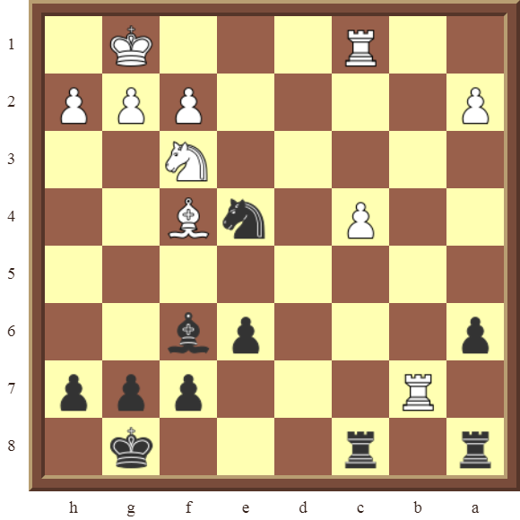
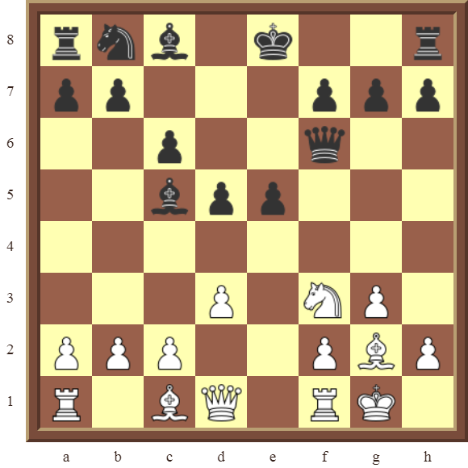
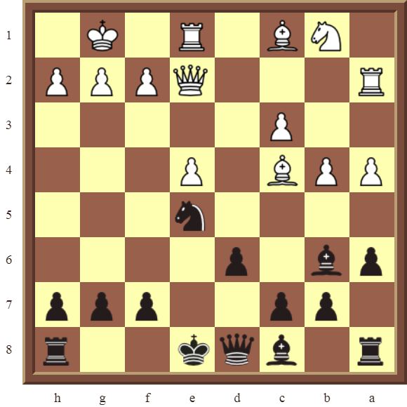
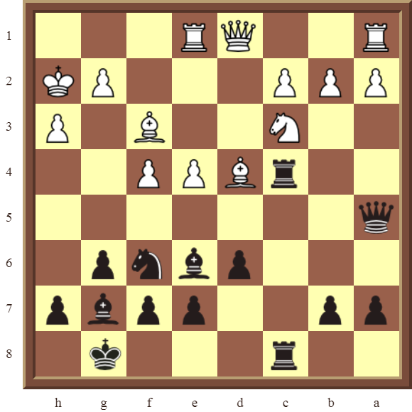

The Rules of Chess
Chess is a two-player strategy game played on a checkered gameboard. The gameboard consists of 64 squares arranged in an 8x8 grid. Each player begins the game with 16 pieces: one king, one queen, two rooks, two knights, two bishops, and eight pawns. The goal of the game is to capture the opponent's king, or to put the opponent in a situation where they cannot make a move. The player who captures the other player's king wins the game.
Set Up
To set up the game, place the gameboard between the two players so that the bottom-right square is white. The players should sit across from each other, with White going first. Each player's pieces should be placed on the back row of the player's side of the board, with the king in the center, the queen on the left of the king, and the other pieces in the following order: bishops, knights, rooks. The pawns should be placed in the second row. The gameboard should look like this:

Basic Tactics and Strategies
Forks
A fork is a tactic where a piece attacks two or more enemy pieces at the same time, forcing the enemy to decide which piece to defend. For example, a knight can fork a king and a rook by attacking both pieces at the same time:
In this situation, the enemy must decide which piece to defend. If they defend the king, the rook can be captured. If they defend the rook, the king can be captured. Either way, the enemy will lose material as a result of the fork.
Pins
A pin is a tactic where a piece attacks a piece that is protecting another piece, forcing the enemy to keep the protected piece in place. For example, a bishop can pin a knight to a queen by attacking the knight:
In this situation, the knight cannot move because it is protecting the queen. If the knight moves, the queen will be captured by the bishop. This means the enemy is forced to keep the knight in place, which can be beneficial to the player using the pin.
Skewers
A skewer is a tactic where a piece attacks a piece that is behind another piece, forcing the enemy to move the protected piece and exposing it to capture. For example, a rook can skewer a queen and a bishop by attacking the bishop:
In this situation, the bishop cannot move because it is protected by the queen. If the bishop moves, it will be captured by the rook. This means the enemy is forced to move the queen to protect the bishop, exposing the queen to capture. Skewers can be very powerful tactics because they can lead to the capture of high-value pieces.
Discovered Attacks
A discovered attack is a tactic where a piece moves out of the way of another piece, allowing the other piece to attack an enemy piece. For example, a rook can discover an attack on a bishop by moving out of the way of a pawn:
In this situation, the pawn moves out of the way of the rook, allowing the rook to attack the bishop. This can be a powerful tactic because it allows the player to attack an enemy piece without having to expose their own pieces to attack.